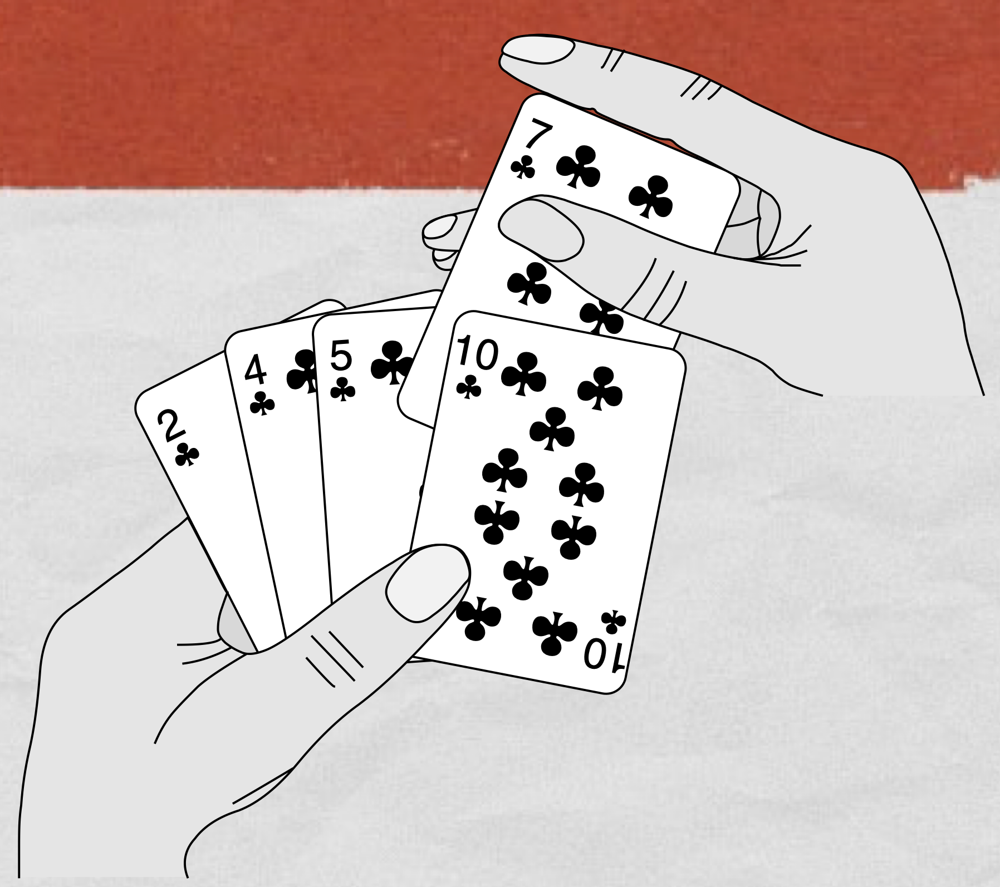

L’objectif de cette séance est de découvrir comment colorier chaque sommet d’un graphe à l’aide d’un algorithme glouton.
Colorier un graphe signifie associer une couleur à chacun de ses sommets de façon à ce que deux sommets liés par une arête n’aient pas la même couleur (deux sommets non adjacents peuvent avoir la même couleur).
Colorier un graphe avec un nombre minimal de couleurs est un problème difficile mais l’utilisation d’un algorithme glouton permet de résoudre le problème, au prix d’un nombre de couleurs qui n’est pas toujours minimal.
[Lire]Représentation d'un graphe en informatique
Plusieurs modes de représentation peuvent être implémentés pour stocker des graphes : matrices d’adjacence (ou sommet-sommet), listes des voisins, des successeurs ou des prédécesseurs. Lors de cette séance nous allons écrire les classes réalisant ces implémentations.
Structure de graphe basée sur une liste d’adjacence
-
Écrire le code de la méthode
__init__de la classeSommetdont la spécification est :1 2 3 4def __init__(self: Sommet, val: str) -> None: """ Initialisation d'un sommet. """Remarque : La classe
[Lire]Sommetpossède deux attributs :
Tri par insertion
Tri du joueur de cartes
Le tri par insertion est un tri « naturel » souvent qualifié de « tri du
joueur de carte ».
Comment un joueur de carte trie-t-il ses cartes ?
- Au début, la main gauche du joueur est vide et ses cartes sont posées sur la table.
- Le joueur prend alors sur la table les cartes, une par une avec sa main droite, pour les placer dans sa main gauche.
- Pour savoir où placer une carte dans son jeu, le joueur la compare avec chacune des cartes déjà présentes dans sa main gauche, en examinant les cartes de la droite vers la gauche.
- À tout moment, les cartes tenues par la main gauche sont triées ; ces cartes étaient, à l’origine, les cartes situées au sommet de la pile sur la table.
- Choisir sept cartes à jouer. Les placer en ligne au hasard sur une table et
mettre en œuvre la technique décrite ci-dessus.
Se filmer pendant toute l’opération en commentant chacune des étapes !
Tri par insertion
Introduction
La méthode du tri par insertion est ilustré à cette adresse, ou, de façon plus folklorique, à cette adresse.
[Lire]Tri par sélection
La recherche d’un élément dans un tableau est beaucoup plus efficace si ce tableau est ordonné. À vrai dire, ce n’est pas en cours d’informatique que vous avez découvert ceci : dans toutes les bibliothèques les livres sont classés de façon à rendre leur recherche plus rapide !
La question que se propose d’aborder ce document est donc : « comment classer les éléments d’un tableau selon une relation d’ordre donnée ? ».
[Lire]Algorithmes de tri
Au programme de la classe de première
| Contenus | Capacités attendues | Commentaires |
|---|---|---|
| Tris par insertion, par sélection | - Écrire un algorithme de tri. - Décrire un invariant de boucle qui prouve la correction des tris par insertion, par sélection. |
- La terminaison de ces algorithmes est à justifier. - On montre que leur coût est quadratique dans le pire cas. |
Documents
-
Doc. Tri par sélection
-
Doc. Tri par insertion
Réalisation d'une classe Liste Chainee
Par transformation des fonctions du document 1 dans ce chapitre en méthodes, écrire le code de la classe Liste qui définit le type abstrait « Liste chaînée ».
Réponse
|
|
Implémentation du type abstrait Liste Chaînée à l'aide de listes Python
Reprendre toutes les fonctions des sections 2 et 3 du document 1 de ce chapitre, en implémentant cette fois le type abstrait « Liste chaînée » à l’aide de tuples (à la place de la classe).
Réponse
|
|
Algorithmes gloutons
Au programme de la classe de première
| Contenus | Capacités attendues | Commentaires |
|---|---|---|
| Algorithmes gloutons | Résoudre un problème grâce à un algorithme glouton. | Exemples : problèmes du sac à dos ou du rendu de monnaie. Les algorithmes gloutons constituent une méthode algorithmique parmi d’autres qui seront vues en terminale. |
Documents
-
Doc. Le rendu de monnaie
Héron d'Alexandrie
Héron d’Alexandrie est un ingénieur, un mécanicien et un mathématicien grec du premier siècle après J.-C.
On ne sait pas grand chose de la vie d’Héron, si ce n’est qu’il était originaire d’Alexandrie ; les historiens se sont même longtemps divisés sur l’époque où il a vécu. Leurs estimations allaient du 1er siècle avant J.-C. au 3ème siècle de notre ère. Aujourd’hui, la querelle est éteinte : il est clairement établi que Héron est postérieur à Vitruve mort en $- 20$, et contemporain de Pline l’Ancien (23 – 79), en étant actif autour de l’an 62. Il a donc bien vécu au 1er siècle après J.-C. et sans doute au début du 2ème siècle, donc sous l’Empire romain, mais dans l’Alexandrie grecque.
[Lire]Parcours en profondeur : écriture du code en Python
Écriture d’une classe Graphe
L’objectif de cette partie est l’écriture du code modélisant un graphe orienté. La représentation choisie est celle d’un dictionnaire de successeurs (en cours et dans le document 15,2 on a étudié les représentations par des matrice et liste de successeurs).
La représentation par un dictionnaire de successeurs présente de nombreux avantages. Par exemple,
- les sommets peuvent être des entiers ou des chaînes de caractères quelconques ;
- La complexité de la liste des successeurs est directement proportionnelle au nombre de successeurs pour un sommet donné. L’occupation mémoire est donc faible si les sommets possèdent peu de successeurs.
Remarque : dans le cas d’une matrice d’adjacence, la taille est fixe et comporte $N^2$ éléments si le nombre de sommets est égal à $N$.
Remarque
Contrairement à ce qui a été fait dans le document 15,2, la classe qui va être implémentée ici permettra d’initialiser un graphe vide, puis de le constituer progressivement.
[Lire]